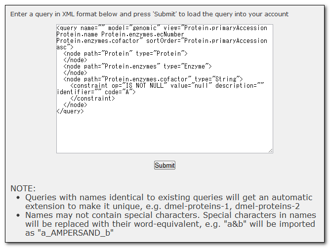

The basics
It is possible to import queries. The queries need to be in xml format, as in the example below. You can import more than one query at the same time by by enclosing them in the xml tags <queries></queries>.
- If you are not logged in, the query will automactically be displayed in the QueryBuilder. You can save the query permanently when you're logged in.
- If you are logged in, the query will automatically be saved to MyMine under 'Saved Queries'.
NOTE: Creating accounts is not available for academic version.
